1.A級平織布（素面 / 格子 / 條紋）
- 價格：一碼55元
- 優惠：10碼以上53元，20碼以上50元（可混搭）
- 材質：A級尼龍+彈性纖維（萊卡）
- 幅寬：約132公分
- 特色：抗皺、吸濕排汗、涼感、舒適透氣
- 用途：襯衫、洋裝、睡衣等
- 產地：台灣大廠製造
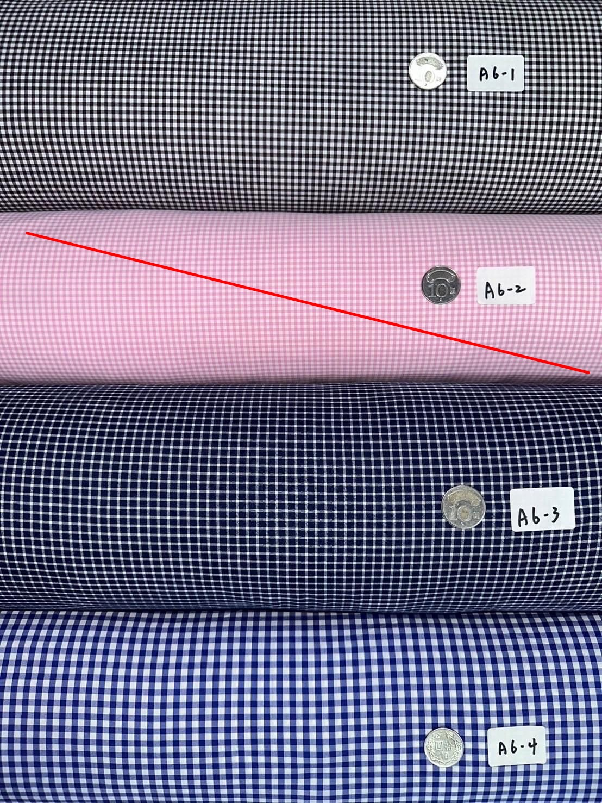
01
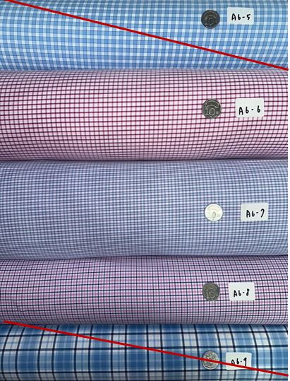
02
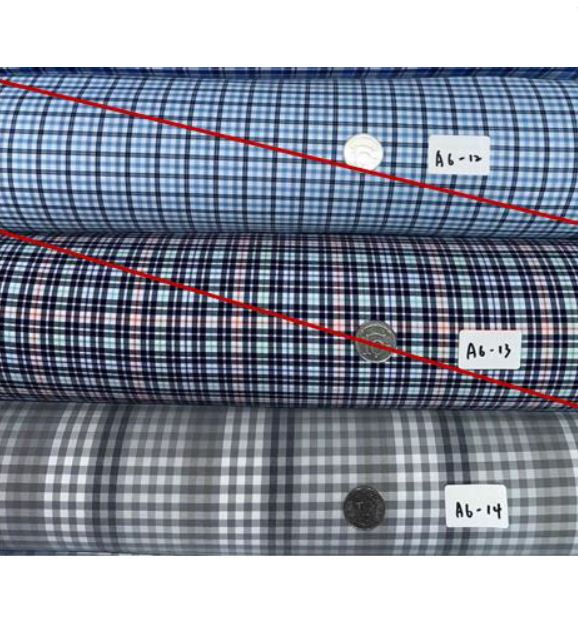
03
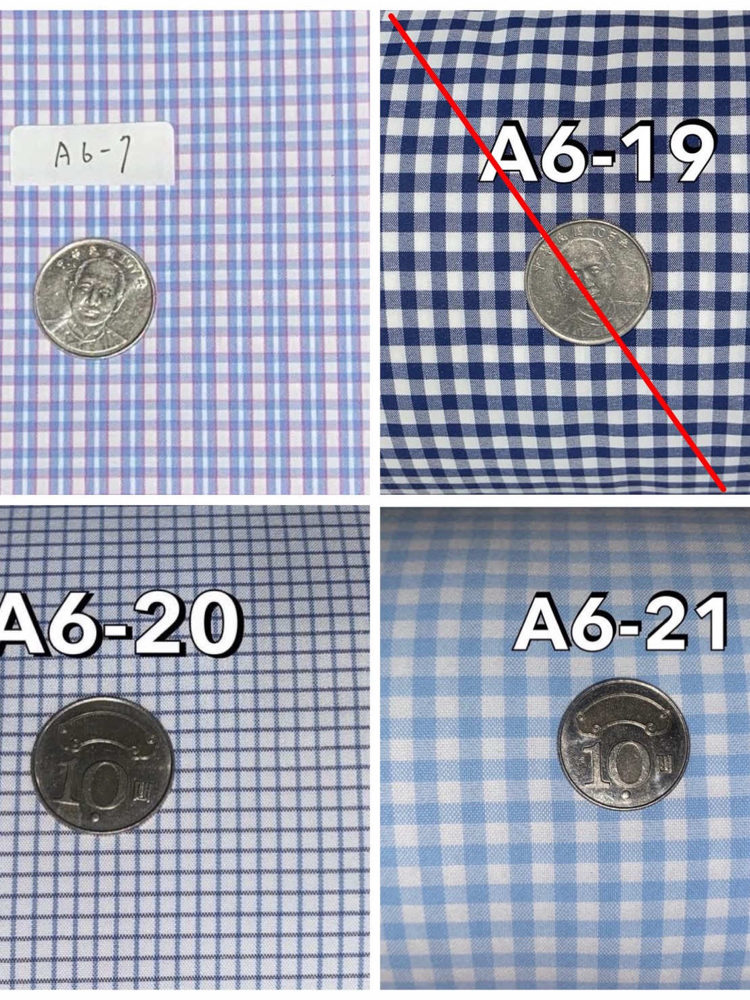
04
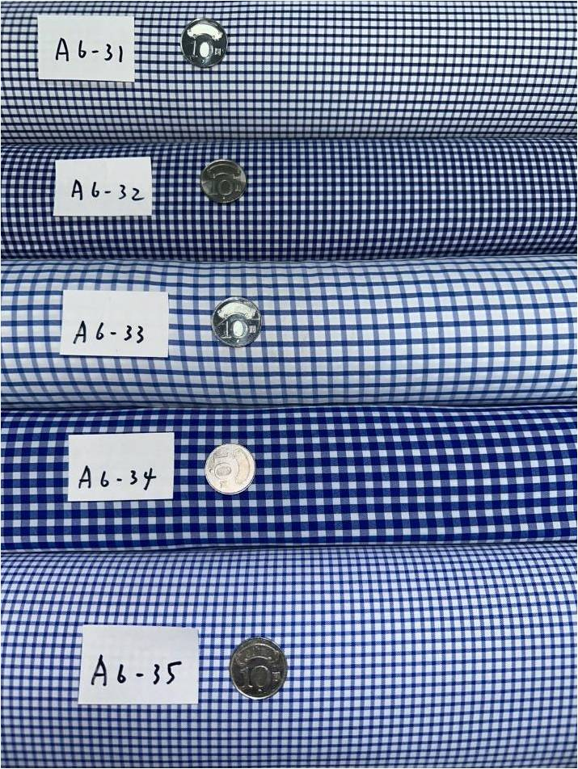
05
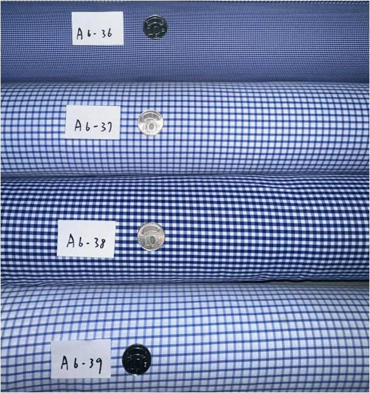
06

07

08
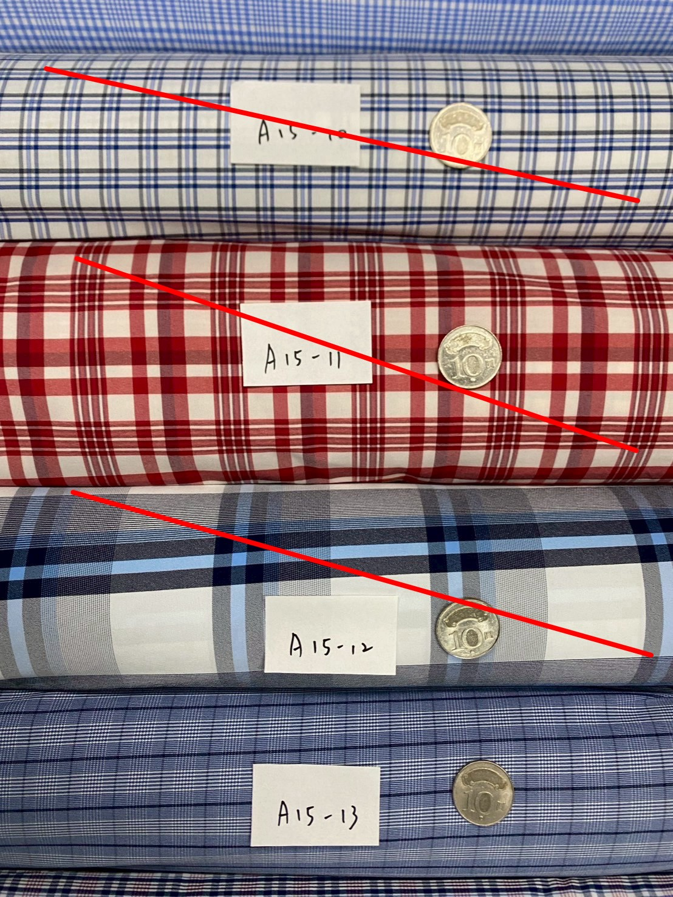
09
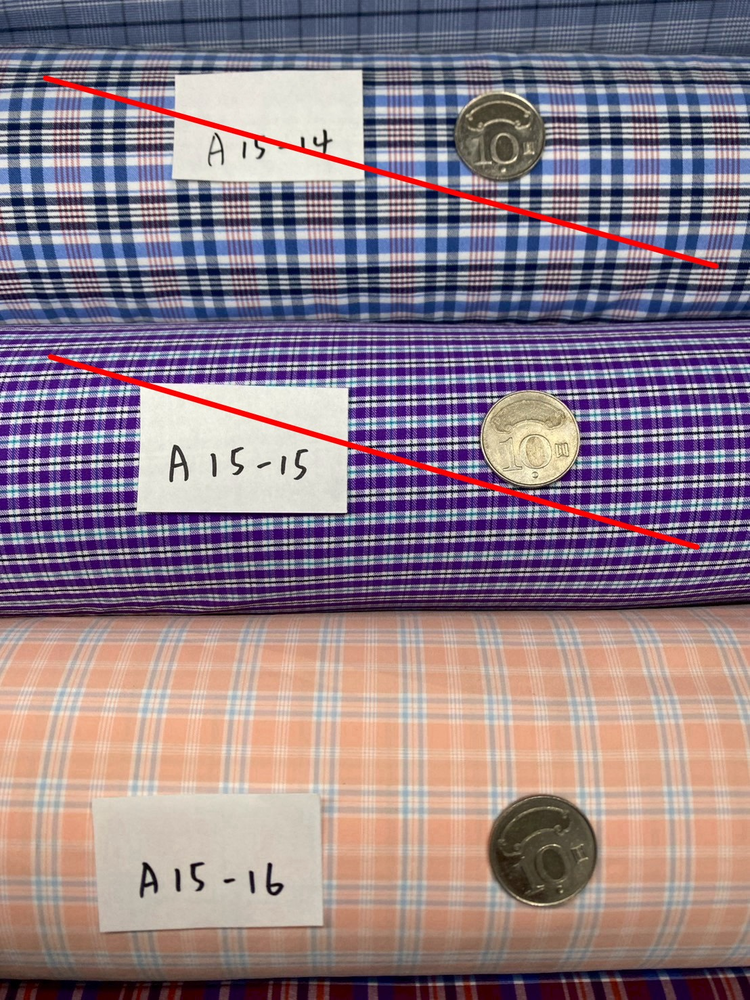
10

11

12
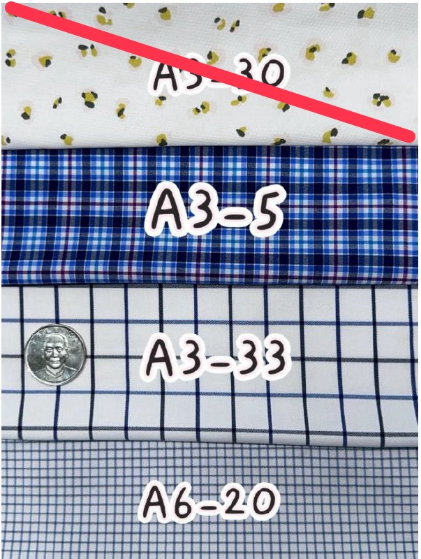
13 (條紋系列)

14

15

16 (素面系列)

17

18

19
2.四面彈防潑水機能布
*優惠價：一碼80元
*多件優惠（全品項可搭配）：
*任選10碼以上，每碼78元
*任選20碼以上，每碼75元
*特色：防潑水、透氣、四面彈性
*成分：棉 55% + 尼龍 32% + 萊卡 13%
*幅寬：132-138 公分
*重量：每碼 230 公克
*用途：外套、上衣、長短褲、登山褲等服飾
*產地：台灣大廠（上市公司），品質保證！
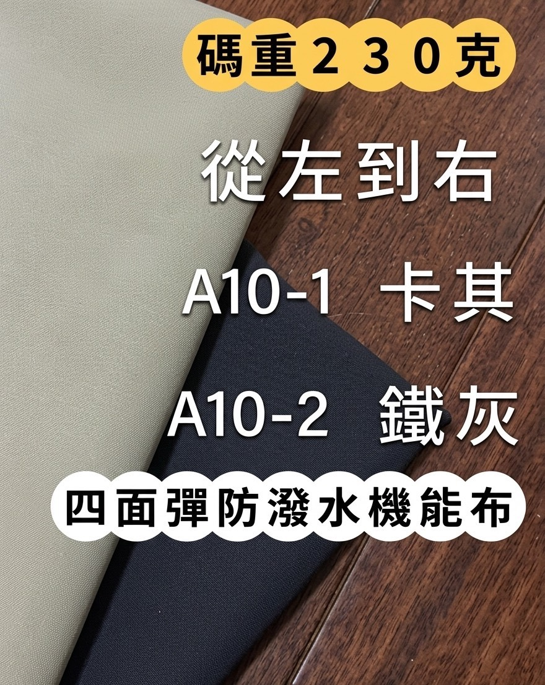
21
3.聚酯羊毛機能布
單價：一碼 85元
優惠：10碼以上83元，20碼以上80元（可混搭）
成分：聚酯纖維54% + 羊毛34%+彈性纖維12%
特色：防縮羊毛、保暖、舒適
幅寬：132–140 公分
重量：每碼 255 公克
用途：上衣、外套、長短褲等各式服飾
產地：台灣大廠（上市公司），品質保證！
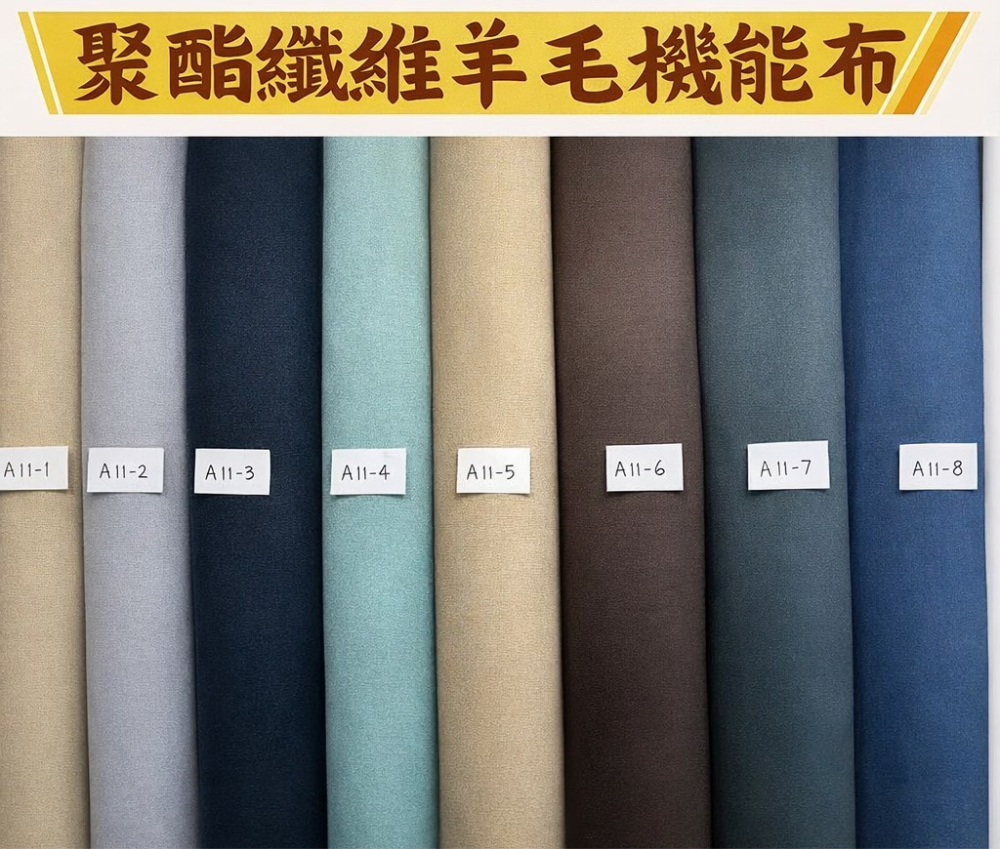
25
4.TC布
- 價格：一碼65元
- 優惠：10碼以上63元，20碼以上60元（可混搭）
- 材質：TC材質
- 碼重：200克
- 幅寬：約132公分
- 用途：襯衫、洋裝、睡衣等
- 產地：台灣大廠製造
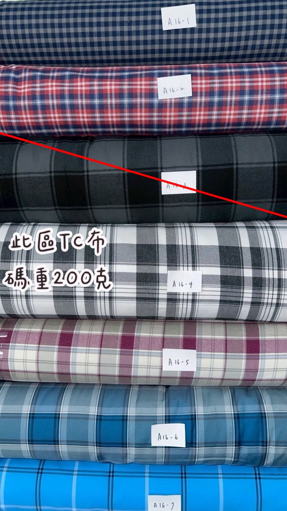
31
5.A級平織無彈（可作包包）
- 價格：一碼60元
- 優惠：10碼以上58元，20碼以上55元（可混搭）
- 材質：A級尼龍（無彈）
- 碼重：200克
- 幅寬：約132公分
- 用途：襯衫、洋裝、睡衣、包包等
- 產地：台灣大廠製造
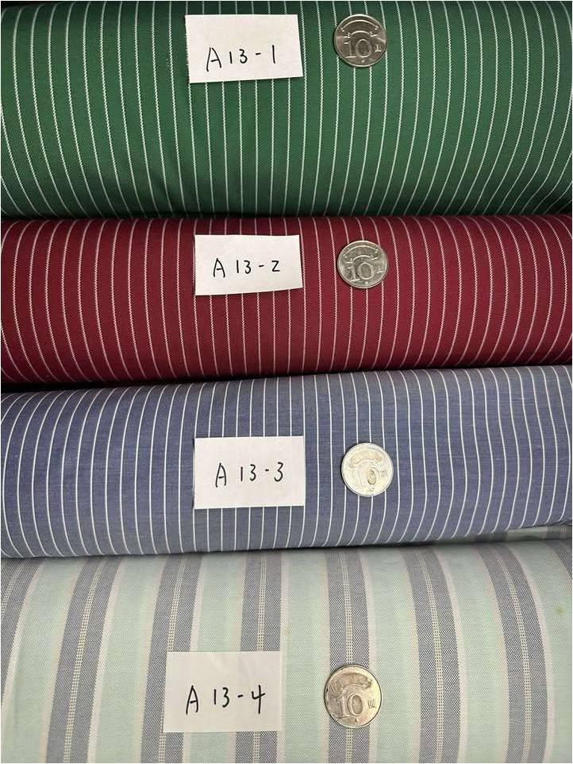
32